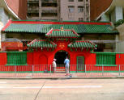

Ladies Market > Nearby Attractions
Nearby Attractions
Centrally located in the heart of Kowloon the Ladies Market makes a good starting point for a tour of many other interesting attractions. Some are in walking distance while others are a short ride away by the excellent public transport system of Hong Kong. Plan your trip to the Ladies Market to include a few of these other places of interest, or perhaps split your part up and while some of you shop here on Tung Choi Street others may find more to there interest nearby.
More market streets
While Ladies Market is the premier street market in the area there are also others, some dedicated to specific things, while others are more general.
Street Market: Fa Yuen Street nearby also has a more local, less tourist-friendly, street market.
Flower Market: the flower market at Sai Yee Street and Flower Market Road opens from 7a.m. to 7p.m., wholesale cut flowers, retail household potted plants and gardening accessories can be found there. website
Goldfish market: Actually on the same official road as Ladies Market this area to the northern end of Tung Choi Street is the Goldfish market where everything from cheap goldfish to expensive carp are sold. While only a short stretch of road it has everything imaginable for a tropical fish enthusiast to see. There are plenty of tanks, equipment and tank decorations, water weeds and the like as well for those not planning on taking live fish. website
Bird market: locals' favorite place to watch birds, buy birds and bird keeping accessories. More details
Mall shopping
Check out some of the major shopping arcades and malls in the area. By far the largest and most modern is the Langham Place, at 8 Argyle Street. It is the largest shopping mall in the Mong Kok district. With a large glassy atrium, many floors of shopping and food outlets it attracts a young fashionable crowd. A discount scheme for tourists is available which gives 10 or 20% off in many of the outlets, enquire at the customer service desk for details. Located just one block west of Nathan Road it is most easily reached from Ladies Market by following signs back to the MTR, then entering the MTR and using the signs inside the station that direct you to the correct exit for Langham Place.
An old school arcade that has been reinvented as a too-cool-to-be-true young ladies fashion destination is Argyle Centre, sometimes called MongKok Centre, located at 688 Nathan Road on the corner with Argyle Street it's just a few steps from Ladies Market and a great additional shopping destination for the younger lady. Although inside in shop spaces the outlets operate in a similar way to our market stalls and there is generally no fittings but if you want the hottest trends from Japan, Korea and Taiwan while paying rock bottom prices then this is the place to go. Reach it from the MTR Mongkok Station Exit D2, come out and turn left to walk along Sai Yeung Choi Street until you reach the comparatively modest entrance way which is beside a taxi rank.
Shopping streets
If you are still looking for more shops, find your way back to Nathan Road and there are more shops and arcades. If you want to go to more market, this area has a lot more markets to offer.
Sport Shoes Street: located at Fa Yuen Street, this Sportwear Street is the dreamland for the young and special edition brand name can be found here. Opening hours 11:00a.m.-9:30p.m. website
AV and Electronic shops: lots of AV, telecommunication and electronic shops can be found around Sai Yeung Choi Street south.
Historic buildings
All Saints' Church, on the corner of Pak Po Street and Yim Po Fong Street this modern Anglican church caters to a local community as part of the West Kowloon Diocese and manages the adjacent middle school.
Shui Yuet Temple, 90 Shantung Street - Operating still today as a Taoist temple this traditional worship building might be overshadowed by high rises today but is still an important part of the community. Painted vibrant red with a traditional green tiled roof it is managed by the charitable Tung Wah Group of Hospitals.
Old Kowloon Police Headquarters - Still in use as a police station this early 20th century British Colonial building exemplifies that type of public services being built at the time.
Tong-lau, 600-626 Shanghai Street. While at the street level these may be unassuming shops, mostly selling tiles and floor coverings to the building trade, but look up and see that they have a unique 3 story design with overhang that exemplifies the traditional "shop house" of the 1920s. Very few of these buildings exist anywhere and so they are currently protected.